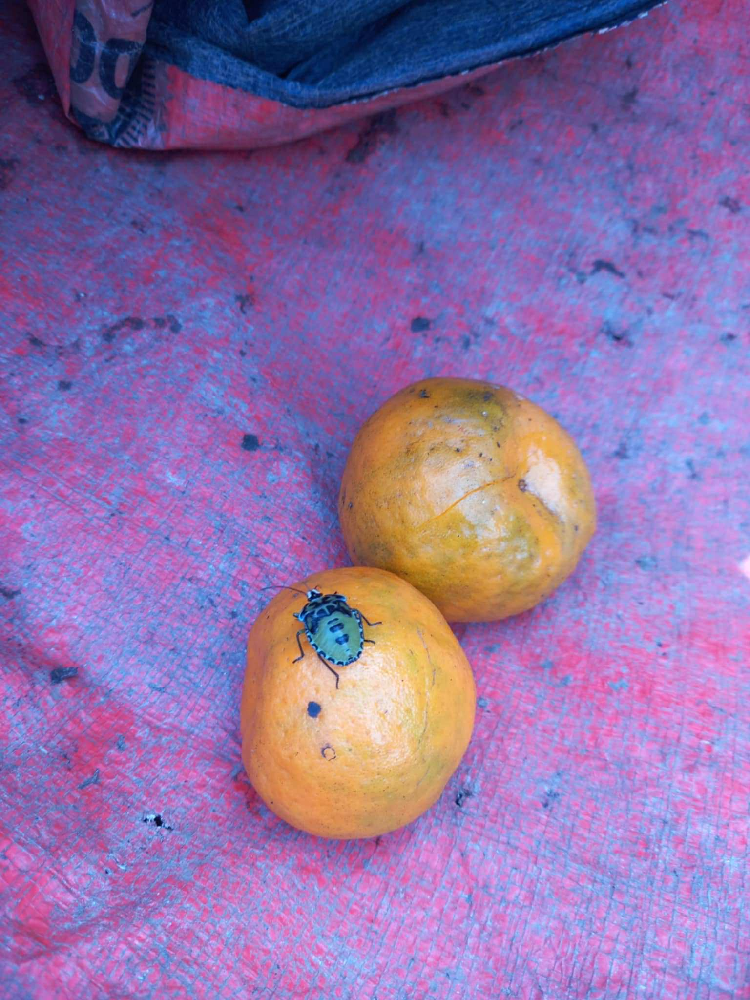
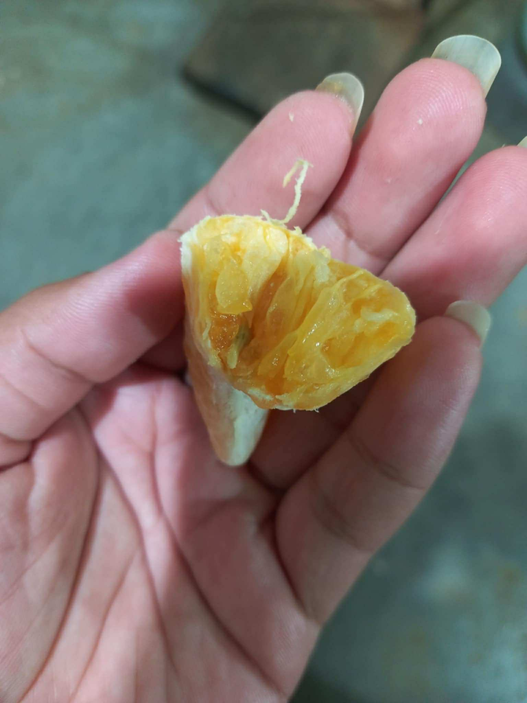
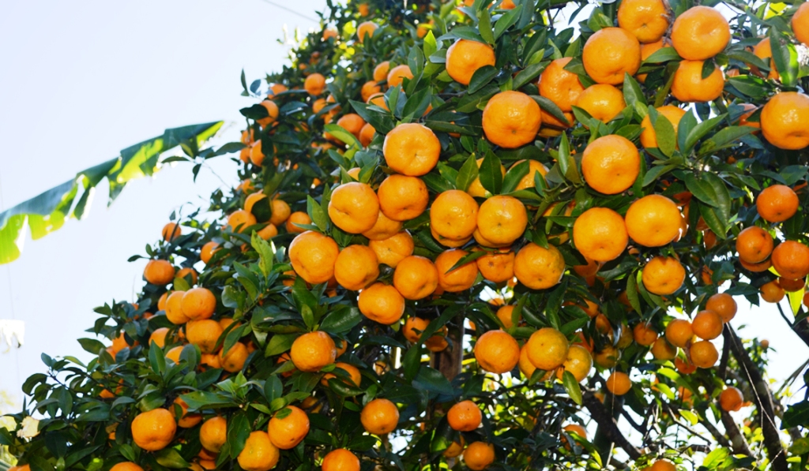
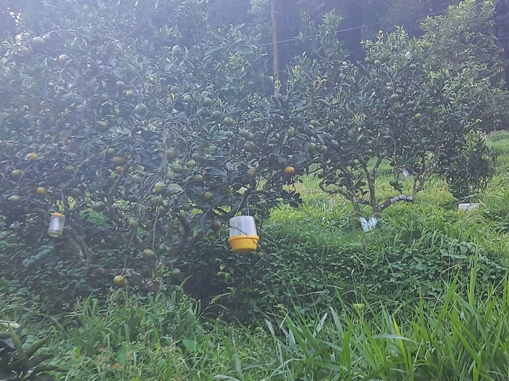

Survey on prevalence, economic impact, and control measures in Tanahun, Nepal
Mandarin orange contributes about 26.84% of total fruit production in the mid-hills of Nepal. However, the prevalence of Green Stink Bugs (Nezara viridula) in mandarin orchards has adversely affected both yield and fruit quality. Infestations lead to significant fruit deformation, discoloration, and premature fruit drop, which directly impact farmers' income.
Farmers have reported difficulties in managing the pest due to its rapid population increase and the lack of awareness on integrated pest management. Chemical controls are widely used, but concerns regarding environmental and pollinator safety are emerging.
This study aimed to assess the infestation status of stink bugs, its economic impact on local farmers, and the control measures adopted by farmers in Tanahun district. A convenience sampling followed by simple random sampling was employed where 75 farmers from 5 different wards of Byas and Bhan municipalities were interviewed using a semi-structured questionnaire.
Sample Size: 75 farmers
Location: Byas and Bhan Municipalities, Tanahun
Surveyers: Sujan Chapagain, Suyog Paudel, Sushanta Shrestha
Data Collection: Semi-structured questionnaire and personal interviews
Infestation Severity: Most severe (64% of respondents)
Economic Loss: Mostly > NPR 50,000
Control Measures: Cultural, Chemical, Biological

Mandarin orchard affected by stink bugs in Tanahun.

stink bug internally infestation.

Ripe mandarin in citrus orchad.

Lure trap observed during survey.